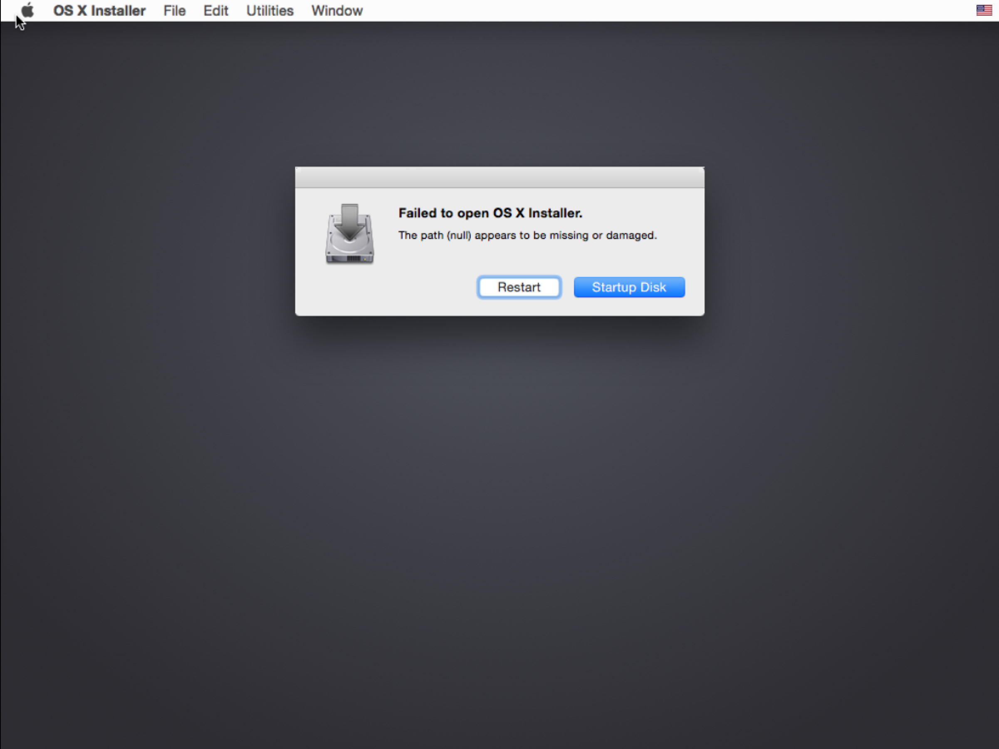

Unboxing OS X Yosemite for Packer
Today OS X Yosemite is available in the Mac App Store. So it's time to build a basebox for Packer and Vagrant.
First I have to download the new image.
vagrant up a Mavericks box
To do that, I start a Mavericks box, that I already have. I use this Vagrantfile with the box named osx109.
# -*- mode: ruby -*-
# vi: set ft=ruby :
VAGRANTFILE_API_VERSION = "2"
Vagrant.configure(VAGRANTFILE_API_VERSION) do |config|
config.vm.define :"osx-update" do |config|
config.vm.box = "osx109"
config.ssh.forward_agent = true
config.vm.hostname = "osx-update"
["vmware_fusion", "vmware_workstation"].each do |provider|
config.vm.provider provider do |v, override|
v.gui = true
v.vmx["memsize"] = "2048"
v.vmx["numvcpus"] = "2"
end
end
end
end
Then I just call
vagrant up
and log into the desktop. After a while, the Mac App Store Icon shows, that there's an update.
Download from Mac App Store
I open up the Mac App Store from that VM, and click on the Download button for the OS X Yosemite update.

After downloading the installer starts automatically and shows

Copy InstallESD.dmg
Now, just don't press Continue.
Instead, copy the downloaded InstallESD.dmg file from the VM to your host.
cp /Applications/Install\ OS\ X\ Yosemite.app/Contents/SharedSupport/InstallESD.dmg /vagrant
Destroy VM
Now I destroy the VM with
vagrant destroy -f
Build new basebox with box-cutter
Now it's time to clone the GitHub repo from box-cutter/osx-vm.
git clone https://github.com/box-cutter/osx-vm
cd osx-vm
At the moment, there is no template ready, but I build one based on the osx109-desktop.json file.
Preparing the template
Just make a copy of the 10.9 template
cp osx109.json osx1010.json
vi osx1010.json
and update the iso_url, vm_name and output keys as needed. My updated values are:
$ diff osx109.json osx1010.json
"iso_url": "dmg/dmg/OSX_InstallESD_10.10_14A389.dmg",
"vm_name": "osx1010",
"output": "box/{{.Provider}}/osx1010-{{user `cm`}}{{user `cm_version`}}.box"
Copy downloaded ISO
You have to copy the downloaded Yosemite ISO into the iso/OS X Yosemite/ folder.
mkdir iso/OS\ X\ Yosemite
cp ../InstallESD.dmg iso/OS\ X\ Yosemite
Run packer
There is a Makefile that will help you preparing the ISO and building the basebox with Packer.
make list
make osx1010
Oh, there seems to be a problem as the VM complains
Failed to open OS X Installer.
The path (null) appears to be missing or damaged.

So, I have to stop here. But this will be fixed soon.
Update: This problem is already known and handled in issue timsutton/osx-vm-templates#17.
Workaround
I have done these steps with the first preview of Yosemite:
Use the Mavericks VM from above:
mkdir osx109 && cd osx109
vagrant init osx109
vi Vagrantfile
vagrant up
Then in the VM download and install Yosemite. After installation, stop the VM.
vagrant halt
cd .vagrant/machines/yosemite/vmware_fusion/
cd a7e85e2a-fb19-416d-b5d3-e9700893d307/
cp osx109.nvram osx1010.nvram
cp osx109.vmsd osx1010.vmsd
cp osx109.vmx osx1010.vmx
cp osx109.vmxf osx1010.vmxf
vi osx1010*
tar cvf ~/code/yosemite/osx1010.box Vagrantfile disk* metadata.json osx1010*
cd ..
vagrant box add osx1010 ~/code/yosemite/osx1010.box
But this VM is much bigger than a newly built one, as the disk grows.
Just watch the box-cutter/osx-vm GitHub repo for updates.
You can find my work in progress here.